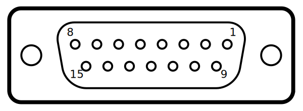
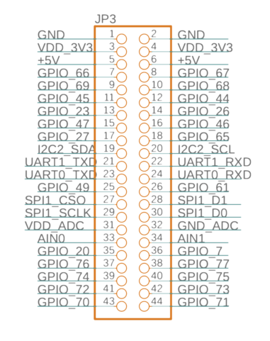
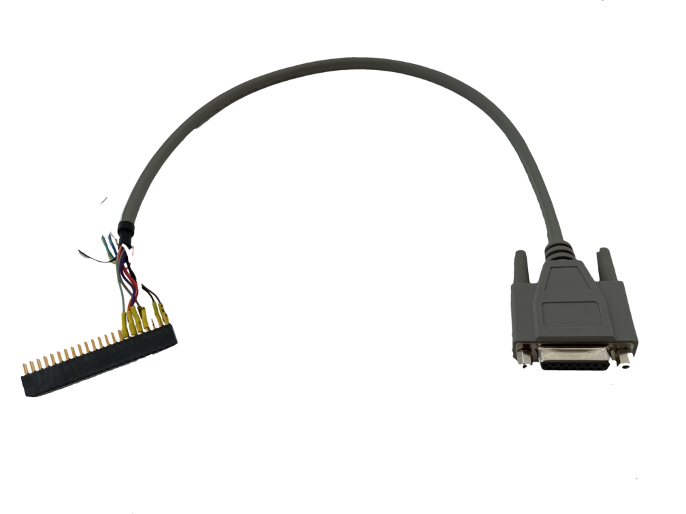

Charging System with Drone Port
To integrate charging system with a droneport, standard system (just a plate without box) is needed with additional interface cable, which allows bi-directional communication.
Prcedure
- order addtional components for building the cable.
- cut dsub cable in half, strip wires, add heat shrink tube
- solder wires to header according the table, based om DP specification
- optionally, activate SDK to remote access and test at CDM
Additional components
Components required for building the cable interface (Mouser codes):
- Cable D-Sub kabel DB15M/F CS-DSDMDB15MF-005 For droneport interface only female is neded (charger side)1.
- Header for source board (2x22, 44pins): 7-534206-2 header & wire housing 2x22p
The interface
Charging System is connected with a Droneport with a cable. One end has D-SUB15, other 44 header pin socket.

the D-SUB 15 female plug goes to Droneport controller.

the 44pin socket goes to pin header located next to BB on the source PCB.
Wireing table
| Beaglebone interface | Beaglebone gpio pin | Cable color 1 | D-SUB pin | D-SUB connector |
|---|---|---|---|---|
| dp-is-closed-pin | gpio66 | ----- | pin 9 | Gate is close (3.3v, status) |
| dp-in-progress-pin | gpio67 | ----- | pin 10 | Gate is opening/closing (3.3v, status) |
| dp-is-drone-detected-pin | gpio69 | --/-- | pin 13 | Drone on the pad |
| dp-is-opened-pin | gpio68 | ----- | pin 8 | Gate is open (3.3v, status) |
| dp-open-pin | gpio45 | ----- | pin 3 | Open gate (3.3v, >=100mS) |
| dp-close-pin | gpio44 | ----- | pin 4 | Close gate (3.3v, >=100mS) |
| dp-is-landing-err-pin | gpio23 | NC | ||
| dp-is-ready-pin | gpio26 | ----- | pin 12 | Automaon in auto and ready (3.3v, status) |
Assembled cable

Add drone port config to the config file
To enable Drone Port interface the GPIO section needs to be added to the skycharge config file. Login remotly to a charging system with ssh and edit the file:
nano /etc/skycharge.conf
on the bottom add lines:
#
# DronePort configuration
#
dp-hw-interface = gpio
dp-is-closed-pin = P8.07 # gpio66
dp-in-progress-pin = P8.08 # gpio67
dp-is-drone-detected-pin = P8.09 # gpio69
dp-is-opened-pin = P8.10 # gpio68
dp-open-pin = P8.11 # gpio45
dp-close-pin = P8.12 # gpio44
dp-is-landing-err-pin = P8.13 # gpio23
dp-is-ready-pin = P8.14 # gpio26
Detailed description of the config can be found here.
Restart the skycharge deamon:
systemctl restart skycharged
To test the droneport config run:
skycharge-cli show-droneport-state